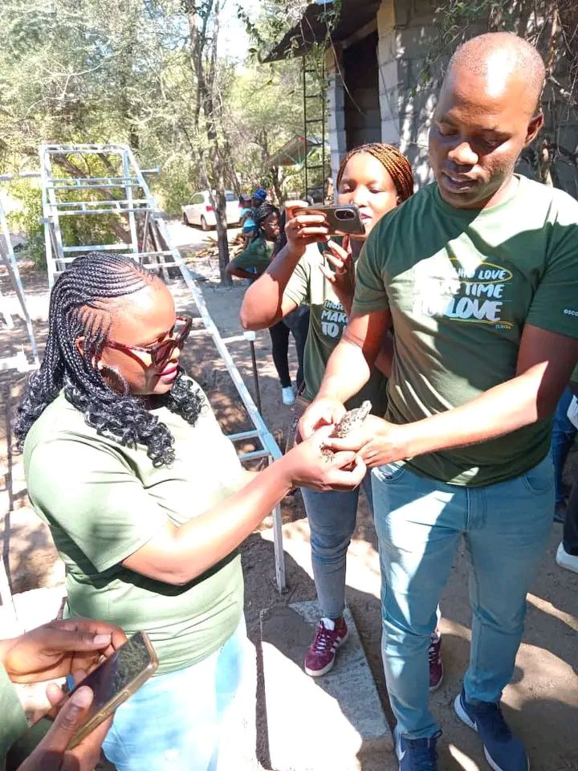

Habitat Conservation
We execute strict monitoring frameworks around wetland nests and eggs. By educating community clusters about crocodile biology behaviors, we mitigate defensive reptile issues and promote natural species stability.
Discover how we balance community safety with wetland preservation standards.
A closer look into our incubator chambers, security walls, and habitat practices.
We execute strict monitoring frameworks around wetland nests and eggs. By educating community clusters about crocodile biology behaviors, we mitigate defensive reptile issues and promote natural species stability.
Working in transparency alongside worldwide wildlife oversight agencies, our byproduct trading systems generate critical resources needed to keep safety dividers maintained.
